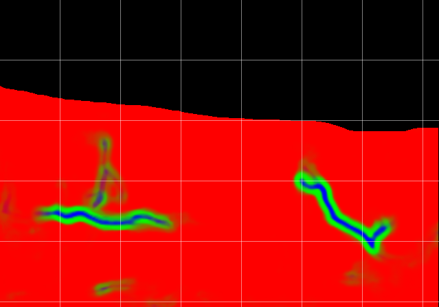
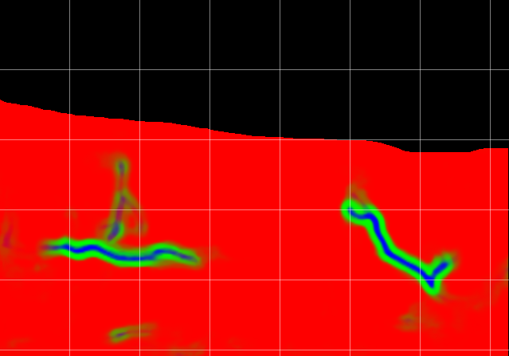
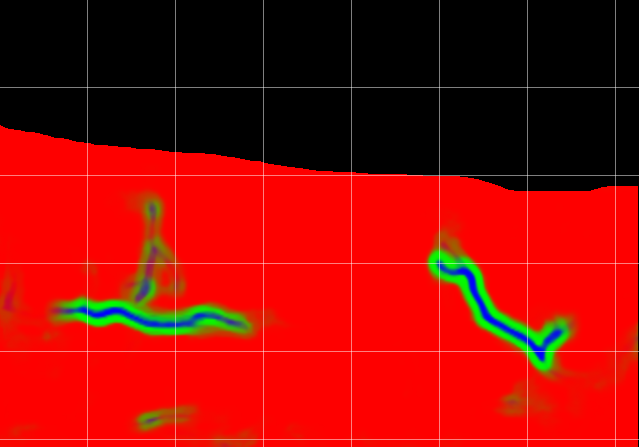

Welcome! My name is Herman, I live in Amsterdam and I develop software. I am specialized in solving difficult logical problems and translating the solutions to code. Visual communication plays a key role in many of my projects, and I enjoy designing beautiful and innovative interfaces. I like brainstorming together with a team to find the path towards a good product, and to make technical decisions that are future-proof. I have an academic background in biophysics, pure mathematics, and theoretical computer science.
I started programming over a decade ago. Since then I learned to work with a range of different languages, libraries, frameworks, tools, and stacks. Some of my favorite programming languages are OCaml, Golang, TypeScript, Dart, and C.
I am a minimalist, and I like designing distinctive and functional interfaces that are responsive, predictable, and easy to learn and understand. I find it particularly interesting to build WYSIWYG editors using modular principles.
It is always a treat when 3D rendering is part of a project. There is such a beautiful range of technologies to get things done, and a lot of mathematics is involved! I mainly have experience with low-level 3D; directly using OpenGL or WebGL, and using shaders.

In my bachelor thesis I got hands-on experience with machine learning by designing and training a Deep Convolutional Neural Network to perform image segmentation of high resolution microscope scans. I also have experience testing and applying existing machine learning models, which is often a very powerful approach to build new solutions.

One of my academic specializations is formal verification using interactive theorem provers. I developed various formalizations using the Coq Proof Assistant. Developing formal proofs is quite challenging, and requires careful thinking about even the smallest logical inferences. Below is an overview of my formalization projects.
| Main topic | Repository |
|---|---|
| Graph pebbling and zero-sum sequences | @bergwerf/pebbling |
| Kleene algebras and shortest paths | @bergwerf/star_semiring |
| Deduction rules for the later modality | @bergwerf/later_modality |
| The Schreier-Sims algorithm | @bergwerf/permutation_factors |
| Arithmetic decidability via automata | @bergwerf/linear_integer_arithmetic |
| The Cantor-Bendixon theorem | @bergwerf/settheory |
| Brouwer’s continuity principle | @bergwerf/intuitionism |
| Thesis | |
|---|---|
| Title | An Exploration of Graph Pebbling |
| Supervisor | Dr. Wieb Bosma |
| Group | Pure Mathematics |
| Full Text | doi: 10.48550/arXiv.2303.04590 |
| Resources | Presentation on YouTube, Formalization on GitHub |
| Internship | |
|---|---|
| Title | Circular lists in Iris ∗ deduction rules of ▷ |
| Supervisor | Dr. Robbert Krebbers |
| Group | Software Science |
| Full Text | doi: 10.5281/zenodo.6340500 |
| Resources | Formalization on GitHub |
| Thesis | |
|---|---|
| Title | Nerve fiber tracing in bright-field images of human skin using deep learning |
| Supervisor | Dr. Erik Meijering |
| Group | Biomedical Imaging Group Rotterdam |
| Full Text | TU Delft Repository |
| IEEE Article | doi: 10.1109/ISBI.2019.8759504 |
| Minor | |
|---|---|
| Topic | Interactive Environments at the Industrial Design faculty |
| Description | During one full semeter we were introduced to Interaction Design for physical environments, and challenged to go through an iterative designing and prototyping procedure in small teams. |
| Company | Bergwerf Labs |
|---|---|
post@hbergwerf.nl |
|
| KVK | 73224480 |
| VAT | NL002378274B15 |